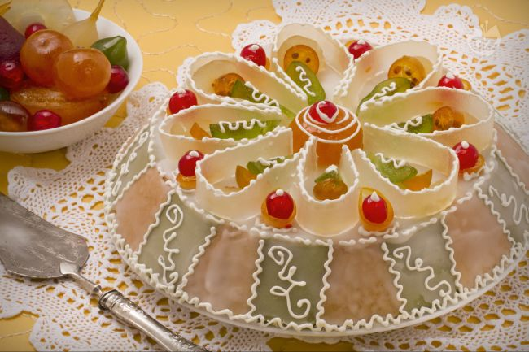

Cassata Siciliana

Description
Cassata Siciliana is a traditional Italian dessert from Sicily that consists of layers of sponge cake and sweetened ricotta cheese, coated with a layer of marzipan and decorated with candied fruit and nuts. The name "cassata" comes from the Arabic word for bowl, and the dessert was originally made in a bowl-shaped mold.
To make cassata, the sponge cake is first baked and cooled, then cut into thin slices. The sweetened ricotta cheese is mixed with sugar, chocolate chips, and candied fruit, and is spread over the sponge cake slices. The cake and cheese mixture is then layered in a round cake pan and chilled until firm. Once the cake is set, it is turned out of the pan and coated with a layer of marzipan, which is a sweet almond paste. The cassata is then decorated with additional candied fruit and nuts, such as candied orange peel, cherries, and almonds. The finished cassata is a colorful and festive dessert that is perfect for celebrations and special occasions.
Ingredients
- Eggs: 4
- Sugar: 1 cup (200 grams)
- Vegetable oil: 1/2 cup (120 ml)
- All-purpose flour: 1 3/4 cups (220 grams)
- Baking powder: 2 teaspoons
- Salt: a pinch
- Ricotta cheese: 1 pound (450 grams)
- Confectioners' sugar: 1/2 cup (60 grams)
- Miniature chocolate chips: 1/2 cup (85 grams)
- Candied fruit: 1/2 cup (80 grams)
- Marzipan: 7-inch circle
- Candied fruit and nuts (optional), for decorating
These are just some basic measurements, but feel free to adjust the quantities to your taste. You can also add other ingredients, such as vegetables or a béchamel sauce, if you like.
Steps
- Make the sponge cake: Preheat the oven to 350°F (180°C). Beat together 4 eggs, 1 cup of sugar, and 1/2 cup of vegetable oil until well combined. In a separate bowl, whisk together 1 3/4 cups of all-purpose flour, 2 teaspoons of baking powder, and a pinch of salt. Gradually add the dry ingredients to the wet ingredients, mixing until just combined. Pour the batter into a greased 9-inch round cake pan and smooth the top. Bake the cake for 25-30 minutes, or until a toothpick inserted into the center comes out clean. Let the cake cool completely.
- Make the sweetened ricotta filling: In a large bowl, beat 1 pound (450 grams) of ricotta cheese with 1/2 cup of confectioners' sugar until smooth. Stir in 1/2 cup of miniature chocolate chips and 1/2 cup of candied fruit.
- Assemble the cassata: Cut the sponge cake into thin slices. Line the bottom and sides of a 9-inch round cake pan with plastic wrap, leaving enough excess to cover the top of the cake. Arrange a layer of cake slices on the bottom of the pan, then spread a layer of the sweetened ricotta mixture over the cake. Repeat the layers until all of the ingredients are used up, ending with a layer of cake. Cover the top of the cake with the excess plastic wrap and refrigerate for at least 2 hours, or until firm.
- Coat the cassata with marzipan: Remove the cassata from the refrigerator and carefully turn it out of the pan. Peel off the plastic wrap and discard. Roll out a 7-inch circle of marzipan and place it over the top of the cake. Smooth the marzipan over the sides of the cake, trimming off any excess.
- Decorate the cassata: Press candied fruit and nuts into the top and sides of the cake as desired. You can use a variety of candied fruit and nuts, such as candied orange peel, cherries, and almonds. Serve the cassata chilled, sliced into wedges. Enjoy!
Back to main page